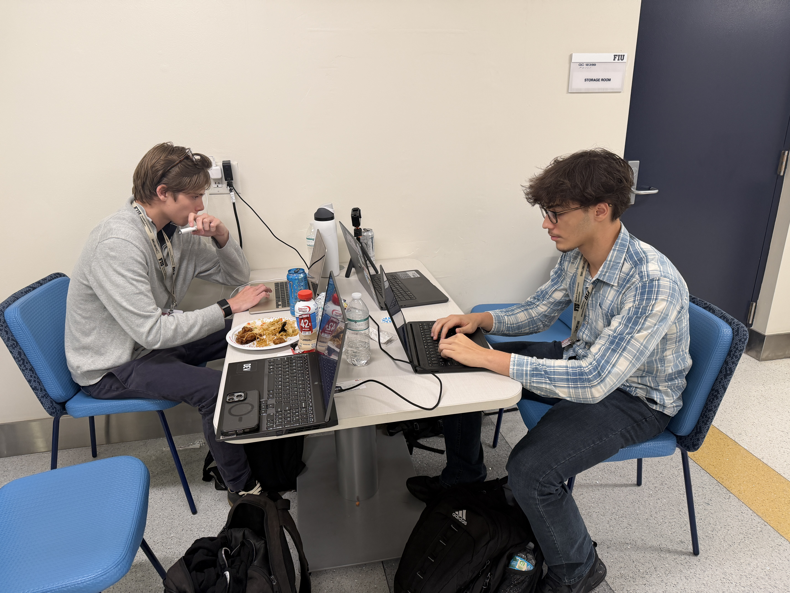
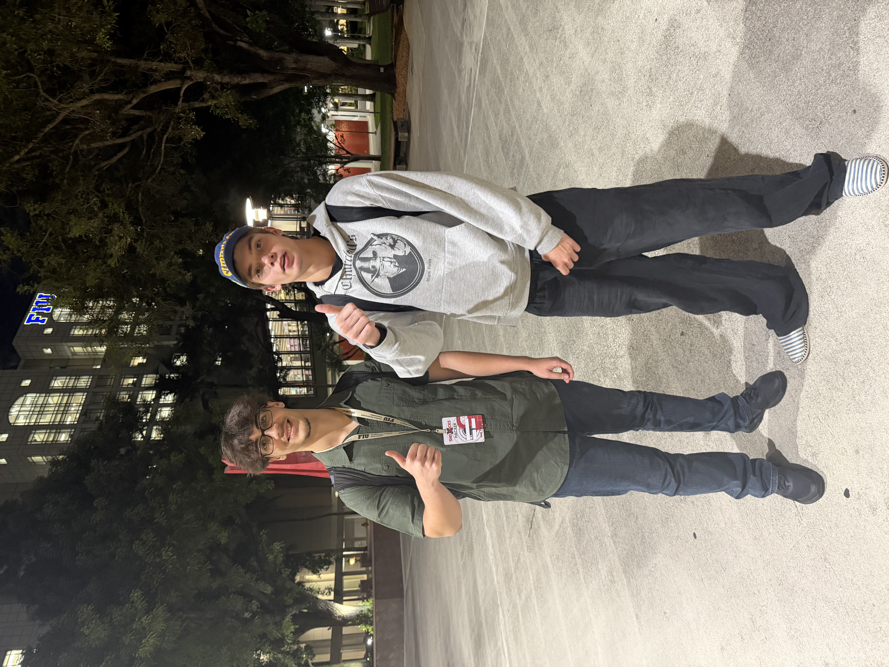

OPEN-SOURCE DEVELOPER TOOLS
Less waste.
More fixes.
Free play.
Scan your code locally. Give Claude a focused task. Keep the evidence behind the fix.
Claude usage may cost extra. No AI account needed for local scans.
HUNT THE BUG.
One tiny sample. Three steps.
Press START to see the evidence.
MODE ILLUSTRATIVE DEMO
AI CALLS NONE
CREDITS NOT REQUIREDREADY WHEN YOU ARE.
JUST CODE.
Sample walkthrough, not a scan of your files.
WHAT YOU GET
Run it.
Read the receipt.
- 01Scan real files.
Choose files or a local folder. Semgrep and Gitleaks return findings without model calls.
- 02Keep repairs focused.
Use the Claude Code plugin, or set a budget in the desktop app.
- 03Check what changed.
Compare source snapshots. Export HTML, JSON and SARIF. Gate new findings in CI.
INSTALL / V1.2.1
Your Mac. Your code.
One command. Ready to scan.
Installs the TokenPilot desktop app, local workbench, and tokenpilot command. Opens the app when it finishes.
macOS on Apple Silicon. Bundled runtime, no Node or npm setup. Scanners are installed separately.
curl -fsSL https://github.com/gregorygerman777-hub/TOKENPILOT/releases/download/v1.2.1/install.sh | shInstalls to ~/Applications and ~/.local/bin. Open a new Terminal after installation.
Desktop app · macOS · Apple Silicon
The DMG installs the desktop app by dragging it to Applications. Use the command above to also install the CLI. This build is unsigned and not notarized; macOS may require your approval in Privacy & Security. Intel, Windows, and Linux desktop downloads are not available in this release.
PLAYER 01 / THE CREATOR
Gregory German.
Freshman computer science student.
Creator of TokenPilot.
Building tools that make AI coding work easier to inspect and less wasteful.


BEFORE YOU HIT START
What does “scanner-cleared” actually mean?+
The configured static rules stopped matching. That is not proof of behavioral safety. The bundled rules are a focused starter pack, and an independent AI Challenger is not implemented.
Does my source leave my Mac?+
Local scans and snapshots stay on your Mac. If you start a Claude repair, selected context goes to your provider account. Reports may contain sensitive file names or messages; review them before sharing.
Is everything free?+
TokenPilot costs $0.00 and is MIT-licensed. Local scans need no AI account. Claude and other providers may charge for their usage. External tools have their own licenses.
How much does it save?+
Local scanning uses zero model tokens. Savings for your project remain unmeasured without a matched comparison. The source includes a small historical controller benchmark and its limitations.